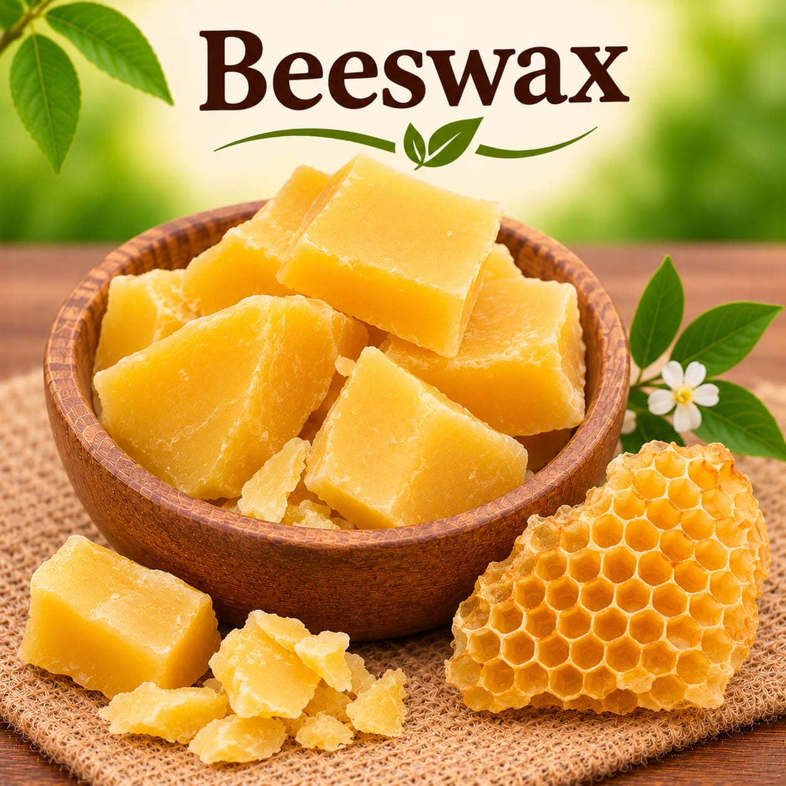

Soap Making
Butters and Waxes
Explore shea butter and beeswax from Sahaj Organics. Ask us to confirm current sizes, prices, and availability before placing an order.
Browse butters and waxesTHE BUTTER AND WAX COLLECTION
Ingredients for soap and handmade formulations
Ingredient properties and suitability depend on the complete formula. Review your recipe and confirm the product details and appropriate use rate before making a batch.

Wax
Beeswax
A versatile wax for soapmaking and a variety of handmade formulations.
Ask for current priceAsk
Butters and waxes in the collection
- Shea Butter
- Beeswax
Product sizes and prices may change. Contact us for the current rate and to check availability.
Have a recipe in mind? Contact Sahaj Organics to ask about current product details and ordering.